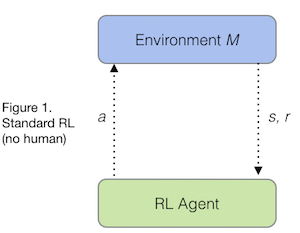

This post explains the paper Trial without Error: Towards Safe RL with Human Intervention, which was authored by William Saunders, Girish Sastry, Andreas Stuhlmüller and Owain Evans.
Deep Reinforcement Learning ("Deep RL") has recently made startling progress in Go, in Atari videogames, and in navigation and control tasks in realistic 3D environments. These milestones have come in simulated environments. Will Deep RL translate this success into real-world tasks?
There are two major obstacles. The first, which we discuss later, is that Deep RL requires a huge number of observations (which are slow and expensive to obtain in real-world tasks). The second obstacle for real-world application of RL is safety.Model-free RL agents learn only throughtrial and error. To learn to avoid a catastrophe, they first need to cause a catastrophe. In Atari games it's fine for an RL agent to die countless times during training. Yet in real-world tasks there are catastrophes that are never acceptable. For example:
Current Deep RL agents would have to take these catastrophic actions many times to learn to avoid them. Moreover, they might then "forget" that the actions are bad and only remember by trying the actions again! (This has been dubbed the Sisyphean Curse of Deep RL.)
How can AI systems learn safely in the real world? Self-driving cars have safety drivers, people who sit in the driver's seat and constantly monitor the road, ready to take control if an accident looks imminent. Could RL systems also learn safely by having a human overseer? One challenge is that learning a simple Atari game can take RL systems 100 million frames. If a human had to watch over every frame, the training period would last more than a year!
HIRL(Human Intervention Reinforcement Learning) applies human oversight to RL agents for safe learning. At the start of training the agent is overseen by a human who prevents catastrophes. A supervised learner is then trained to imitate the human's actions, automating the human's role.
This diagram shows the basic structure of standard reinforcement learning (with no human overseer). The agent observes a state s, sends an action a to the environment, and gets back a reward r:

In HIRL a human overseer sits in between the environment and agent. The human can either let the agent's actions through or block them:
HIRL proceeds in two stages. First, the human plays the role of overseer:
The human overseer looks at each action (s,a) the agent proposes. Safe actions are let through. If the action is dangerous, the human:
The human's main role is to classify actions as "catastrophic" or "safe". Once the human has provided enough examples, we can train a supervised learner (which we call the "Blocker") to do the same job of detecting unsafe actions. The human retires and (if the Blocker has learned to imitate the human correctly) the RL agent is kept safe for the rest of training without human intervention.
We applied HIRL to Deep RL agents (A3C and Double DQN) learning to play Atari games. For each game we defined a class of "catastrophes". The agent has to learn the game without causing a single catastrophe. Results are illustrated in the videos:
The Road Runner results are especially interesting. Our goal is to have the agent learn to play Road Runner without losing a single life on Level 1 of the game. Deep RL agents are known to discover a "Score Exploit'' in Road Runner: they learn to intentionally kill themselves in a way that (paradoxically) earns greater reward. Dying at a precise time causes the agent to repeat part of Level 1, where it earns more points than on Level 2. This is a local optimum in policy space that a human gamer would never be stuck in.
Ideally, our Blocker would prevent all deaths on Level 1 and hence eliminate the Score Exploit. However, through random exploration the agent may hit upon ways of dying that "fool" our Blocker (because they look different from examples in its training set) and hence learn a new version of the Score Exploit. In other words, the agent is implicitly performing a random search for adversarial examples for our Blocker (which is a convolutional neural net).
HIRL had mixed success overall. In Pong and Space Invaders, the agent had zero catastrophes and still was able to achieve impressive performance on the game. In Road Runner we did not achieve zero catastrophes but were able to reduce the rate of deaths per frame from 0.005 (with no human oversight at all) to 0.0001. We compared to a baseline ("Reward Shaping") where the agent gets a big negative reward for causing catastrophes but is not blocked from doing them. This baseline fails to reliably avoid catastrophes. (In Pong, this was due to catastrophic forgetting.)
Here we discuss some challenges in applying HIRL to real-world tasks.
Reward Hacking occurs when a reward function was intended to incentivize behavior X but some undesirable behavior Y also gets high reward. For example, Dario Amodei discovered that in a speedboat race game, an agent could get high reward by repeatedly knocking over some targets -- while completely ignoring the usual objective of racing around the course.
Reward hacking occurs in Road Runner, where the agent gets more points by dying in a particular part of Level 1 rather than continuing to the next level. HIRL could be applied to fix or reduce observed instances of reward hacking if they can be blocked by a human.
However, if the trained Blocker that takes over for the human is imperfect (i.e. some catastrophic action won't be blocked), then an agent with random exploration will eventually try that action. This happened in our Road Runner experiment. The agent killed itself by moving to the top-right corner of the screen and waiting for the coyote to get it (a way of dying that was not in the Blocker's training set). This is an example of a nearest unblocked strategy, where adding a penalty to the reward function to avoid a specific undesirable strategy leaves open a new undesirable strategy. Any application of blocking to prevent reward hacking must be wary of an agent learning another (more subtle) way to hack the reward.
We showed that HIRL can prevent catastrophes in very simple domains. What conditions need to hold for HIRL to work? Here are some key conditions:
Further work, as described below, would allow HIRL to be used more cheaply and in a wider variety of situations.
Distributional shift occurs when a machine learning algorithm is applied to data from a different distribution than its training distribution (violating the iid assumption). In HIRL, the training distribution of the Blocker is different from its test distribution. The Blocker is trained on state-action pairs encountered by the agent in the early stages of learning, but as the agent improves, it reaches new state-action pairs that it didn't reach previously.
In our Pong experiment, distributional shift was not a problem due to the simplicity of the class of catastrophes. In Road Runner, the initial distribution on state-actions did not include all the ways Road Runner could run into the coyote and die. The Blocker was not robust to the shift in distribution that occurred more than 10 million frames later when the agent randomly hit upon these new ways of dying.
How could HIRL deal with the problem of distributional shift? One possibility is to interleaveperiods of human and Blocker oversight. The human provides oversight until the Blocker has enough training data to safely take over. Then, once the agent starts to discover novel states, the human is called back and provides more oversight.
This requires some robust way to detect when the agent is about to encounter new states: e.g. using anomaly detection or a robust measure of the Blocker's uncertainty. Such a system can have false positives (mistakenly classifying a familiar state as novel/anomalous) but not false negatives. Making a robust anomaly detection system is an open problem.
In red teaming, a team of humans ("the red team") constructs examples of dangerous behavior that are designed to be challenging for the Blocker to classify. To test a chatbot Blocker, the red team would generate a wide range of offensive messages (similar to those a chatbot might produce). To test a self-driving car Blocker, the team would generate situations in which a car drives dangerously (e.g. driving off road or too fast) -- either using a private closed circuit (where danger to humans is minimized) or a very realistic simulator.
The Blocker can then be tested on this set of examples to determine whether it correctly detects catastrophes. If not, it would be given more real-world training examples as well as adversarial training on the red team's examples. The red team would then try to defeat the improved version of the Blocker.
Suppose one kind of catastrophes can only occur after the agent has trained for a long time (because it's in a hard-to-reach part of the state space). The red team may be able to produce examples of this catastrophe at some early stage of training. They could train the Blocker on these examples early in training and so the Blocker could take over from the human much earlier.
A related approachis explored in Deep Learning of Robotic Tasks without a Simulator using Strong and Weak Human Supervision, where a "safety module" is trained based on human demonstrations of safe and unsafe behaviour. Off-Environment Reinforcement Learning is another related approach where the agent encounters many more (simulated) dangerous situations than they would in the real world.
HIRL is related to Christiano et al's recent Deep RL from human preferences. In their paper, the agent starts with no information about the reward function and must learn about it entirely from human labels (which are provided asynchronously). In our experiments the standard Atari reward function specifies one component of the agent's rewards. The human overseer modifies this reward function online (synchronously), providing large negative rewards for catastrophes. In principle, the human overseer could specify the entire reward function in this way: HIRL can be used for reward learning from a human.
Conversely, it's not possible to use the asynchronous human feedback of "Deep RL from Human Preferences" to avoid all catastrophes. The asynchronous feedback will occurafterthe agent has caused the catastrophe. Still, asynchronous feedback has various advantages. Evaluators get to see the actual effect of an action before evaluating it. They can play back the history at fast or slow speeds. And parallelization of human labor is trivial.
To make use of asynchronous evaluation in HIRL, we could relax our requirement of learning with zero catastrophes and consider a special "crash-test" training phase where catastrophes are permitted. (These would not be actual catastrophes but realistic simulations of them. For example, a self-driving car on a private road with crash dummies for passengers). If we then moved the agent into the real-world task, the human evaluation/intervention would need to be synchronous.